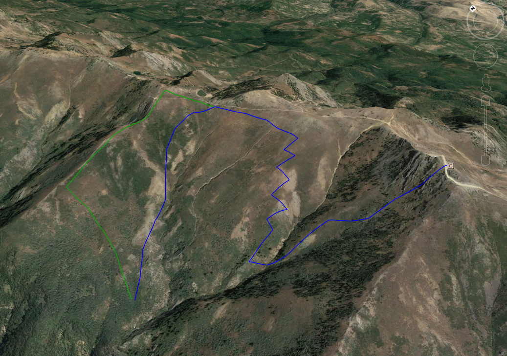

My intent was actually to ski a much more moderate line into Bair Canyon this day, but the siren call of the mountain drew me further and further until I was almost at the peak. Even if the peak was not a restricted area, I probably would not have skied directly off of it into Bair Canyon, because the terrain looked a bit too technical for me, and the coverage might have been too thin too. Anyhow, I dropped off the south shoulder, right at the restricted-area sign, and it was one of the most rewarding descents I've ever done in the backcountry. It was really neat. Of course, I didn't ski it very well, as always, but I'm really happy to have done this line.
In hindsight, I believe that I took an unwise exit route. My path was the blue path in the following picture.
You'll notice that I re-ascended to the GWT, then dropped down again into Bair Canyon, traversing some steep solar aspects near a deep gully. The snow was wet and roller-balling, and I was very nervous about its stability. Fortunately, nothing happened.
What I should have done is take the green path where it diverges from the blue path. I should have skied the ridge leading to Eddie's Peak westward until I could safely drop into Bair Canyon to link up with the trail.
Note that a pair of traction devices for my hiking shoes would have also been really nice as there was lots of ice on the trail back down to the BST.
I'm thinking I'd love to go back, but approach from Eddie's Peak next time instead of the Wolverine trail, then ski the center buldge at the head of the canyon, then go back out the way I came. I think there might be some really great/moderate terrain to ski there. As you can see from the picture above, I just skinned up that buldge, but never skied down it. It looked promising to me.